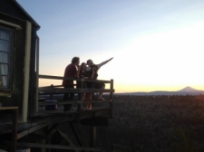
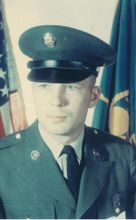
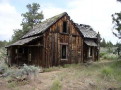
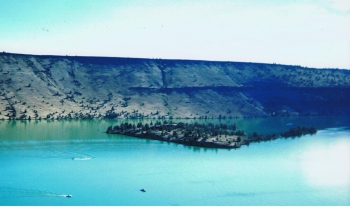
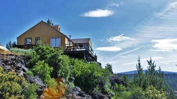
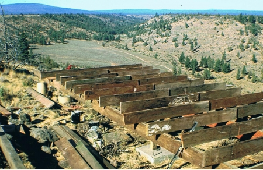

|
My Story |
|

The Fingers of the dawn gently sweep the stars from the sky
The sun doesn't burst into the day, it crawls
Up the Blue Mountains and over the Ochocos
As the shadows are slowly erased from the canyon |
|

In 1967 I had finished basic training for the Army Reserves at Fort Ord in California and spent some time in Sausalito with my cousin Carol. That summer I hung out in Haight-Ashbury, ground zero for the Hippie Revolution. I returned to my job at Freightliner in the production control department. When my wage was raised to $4.50 an your, I was able to buy my first new car, a Fiat 124 Spider.
I heard from somebody at work that there was some property being sold up on a new lake that had been formed by the damming of three rivers, the Deschuttes, Crooked and Metolius. The Fourth of July weekend was coming up, and I had planned to meet my girlfriend's family who were camping at Blue Lake, just west of the town of Sisters. I never did find them, and all the campgrounds were reserved for the holiday, so I drove East into Central Oregon. I was told to just follow the signs to the Cove Palisades Park off Highway 97. The town of Culver came around the corner, once a town with two hotels and their own newspaper when the railroad arrived in 1911. It was now but now showing the decades of wear. I had never been East of the Cascades in Oregon, and when the curve in the road started dropping down into the canyon I could almost see a band of indians sky-lined at the top of the ridge. I had grown up in the 1950's listening to the Lone Ranger on my Silvertone radio and going to the Saturday matinee with my brother to watch the Hopalong Cassidy serials while mon and dad did the grocery shopping. At home on our black and white television we never missed an episode of Gunsmoke. I still have good memories of sitting on the floor by my father, his hand cupped around his ear so he could hear better, and the way he would laugh at Chester. The road led over two bridges and up gravel roads. Just about when I was ready to give up and turn around I arrived at a plateau and saw a small grocery store and gas station in the middle of nowhere. Nancy was the owner, sitting in a rocker and smoking black cigarettes with a gold filter. I smoked Winstons, but had seen cigarettes like hers when I was up in Canada. It looked like Nancy, was in her 80's or 90's, and told me that she and her husband bought the land in the 1960's, and since both of them were pilots they put in an airstrip. Her husband had passed away, but she still lived in a trailer house, ran the store and pumped gas if someone happened by and needed it. Driving along with my convertible top down I drove past the homesteads and barns of the long abandoned ghost town of Grandview. I wouldn't know that within 5 years all these buildings would be gone as people came out from the cities and salvaged them for their lumber to recycle into party rooms, man-caves and trendy restaurants. I drove slowly for about 4 more miles of gravel road, it wasn't an ideal road for a brand new sports car, and finally came to a trailer house and a sign announcing camping lots for sale. It was kind of a letdown, coming through those magnificant canyons, to think I could find anything exciting in this flat land covered in rock and Juniper with no view. I couldn't even see camping in that country, but the developer, Doug Stills, offered me a good campground by the lake to use for the weekend and said fishing would be great. Ron Maples, his salesman, hopped in the back and I joined Doug in the front seat of his red Suburban. I had never seen a car-phone like the one Doug had in his rig, it was for calling land-lines. As we headed out to the rim his CB kept up a racket as he stayed in touch with his construction crew. It's funny, I still remember his phone number, ZO5-5337 through the Bend operator. I had occasion to use it a few times over the next few years. Up by the main gate, all of the lots in the first and second additions had been sold. They were pretty much flatland with scrub Juniper and brush and didn't hold much appeal to me anyway. I was starting to change my mind about the desert.
Doug had just pushed through a road with his D-9 cat along Upper Canyon Rim Drive. All the roads would be pumice and he had contracted with a company to spray them with road oil. These rimrock lots in Addition Three would be ready as soon as the survey was completed later in the summer.
Then I spotted a view of Mt. Jefferson framed by a big Juniper tree and I told him to stop. Walking out to the edge of Big Canyon, I could see a nice flat building spot with panoramic view of the Cascade Range.
I wasn't sure if it was the right decision, but I gave him a check for $100 to hod it until the survey was completed. After all, I had bought my first new car on a knee-jerk impulse and loved it, so maybe this could work. My dad had always taught me to be sceptical of car salesmen so I was pretty sure he would not react favorable to my buying acreage in the desert, but it ws only a hundred dollars. Another two miles later, we pulled over the rim and started down to the lake, and that's when I fell in love with Three Rivers. I still wasn't sure about building anything up there, but the Lake was awesome, and being a property owner came with a private easment to the lake. What is now the 3R Marina was just a small dock with a gas pump. manned by Doug's oldest son, Mike. I had toyed with idea of buying a sailboat and could just see myself out on that lake. I had never been sailing, but all of a sudden the possibility became real.
I found a picnic table down by the lake and started to set up camp. Doug knew I was a city kid and probably made a few jokes behind my back about the city-slicker with the fancy convertible. He told me to look out for rattle snakes, that caught my attention. I tried to act like I knew all about them, but the only thing I knew was from a movie, something about snakes not crossing a horse-hair rope.
I didn't have a rope so I decided that I would sleep better on the picnic table. That was a hard night. I went fishing in the morning, but don't remember if I caught anything. I gave Doug a check for $100 and told him to hold that lot with the tree and view of Mt. Jefferson. I headed back to Portland, not sure if I was making a mistake or not. Back home my dad was stunned that I bought land in the desert. I asked him if he would come up an look at, and he waved his hand downwards at and said Oooosh, in his traditional way of a put-down. I went back to 3 Rivers on Labor Day weekend to see if I could get my $100 back. Doug was excited--all the lots on the rim were sold, and he was waiting to see if I still wanted mine. I decided to "Man Up" and go through with it, went to my credit union for a loan, and sent him a check. He even gave me 10% off for cash. It came to $3,250. Now I had a new car and a piece of land.  photo Kyle Anderson Flash Forward! Over 35 years later, "The Cabin" perches over the rimrock of Big Canyon. Many hands and hammers, loads of reclaimed wood and recycled houseparts took on a new life, overlooking the site where Nick Lambert homesteaded his ranch in the 1880's. Seven mountains of the Cascade range ring the horizon.
Like many of the homesteads of a century ago in Grandview, the Cabin has a cisterin, an outhouse, and an outdoor shower tucked under a dead tree. A rescued Franklin fireplace on a native stone hearth provides heat, and and kerosene lamps give a glow to the cedar walls. It's a homestead cabin, but with modern touchs, a backup generator, propane appliances, and solar powered lights. For three generations of children and grandchildren , it has been the answer to the shout of "Let's go the the Cabin". My daughter stresses that "It is a cabin, not a house, it's where we go to get away from the house". Like the homesteaders of this land a century ago, everybody has chores and mealtime is a gathering. Games are the order of the day, and of the evening. The Cabin now belongs to my daughter, Heidi Nelson, she and her sister pretty much grew up here during the summers. It is a place where I go to write. After several long careers, I finally have time to follow my fascination with the history of Grandview. Last year I had a fortunate meeting with Hope Nance Cropley, a lady who was born on this land in 1917. We have spent many long hours talking about the early days in Grandview, and the results will be published in book form sometime in 2015. You can read one of the chapters by clicking on Here is Her Story. I am publishing some of the shorter essays in the Juniper Berry. Finding Hope
from the introduction
I had heard about an annual Memorial Day gathering when families with connections to the graveyard gathered at the Geneva Cemetery. I really hoped that I might find someone who could help fill in the blanks in my knowledge, so in 2014 I went to visit the gathering. It was active with family-members tending graves and visiting.
I asked the first person I saw if he could tell me about the history of the area. “I'll do one better”, he said, and took me to an older woman sitting in a pickup truck. I asked what her connection was to Geneva, and she replied “I was born here in 1917, and this is where I'll be buried”. Her name was Hope Nance Cropley .
Over the next few months I would spend several Sunday afternoons with Hope, sharp as a tack and bright as a new penny, with a playful laugh and a penchant for shady jokes, it was a great time. Here is her story. |
|
Great! Loved reading about how you discovered this wonderful place. Looking forward to reading the rest of the story! hilliard9109@comcast.net
You have a real easy way about your writing, makes me want to just sit in an easy chair, sip coffee, look out the window, and read your story. It's very good! kept my interest the whole time.--Kathy O.
Now that's just cool!!! Thanks for sharing, I love it over there. Kayaking up the Crooked River finger from Lake Billy Chinook is like being in another world and hiking to the top of Tam-A-Lau trail. I love this soooo much. Thanks for preserving history!!! Kris M.
I love to see the origins of things from this part of the country...Michael B. My family moved to Culver in 1945 or 46. We went to Grandview and saw the school house, the old cemetery, and found a place we would have loved to have lived. It was a lovely spot, I thought. Then all the beautiful old buildngs were gone! just made us sick. We wanted to buy a lot there also, but just couldn't manage it at the time. That was probably 1964 or 65. We had four children at that time. Thanks so much for posting this....Betty P. How wonderful! Love your writing! Do you have other books?--Bonnie H. Allie S. Oh I want that book! LSB-I look forward to getting your book when it is published.... LE-Looking forward to it... pre-order?? Meg C-Can't wait for the whole book. SDS-I want one too. SW-I want a copy. HF-Put me on the list JMC- I want three. thank you. What an endeavor. |
|
Enjoy the following essays John C. Fremont, Kit Carson, and Billy Chinook---In 1843, the U.S. War Department sent John C. Fremont on a map making expedition to get ready for the homesteaders who would be coming out on the new Oregon Trail. He enlisted a little known fur trapper, Kit Carson, as a guide. The Story of Billy Chinook---Fremont lavished praise on Billy Chinook, awarding him a medal recognition of his service to the surveying expedition. Billy Chinook, also known as William Parker, died in 1890. Lake Billy Chinook, created in 1964 with the construction of the Round Butte Dam, is named for this celebrated Native leader.
Bootleggers of the Metolius "During Prohibition, the Oregon Outback became the principal source of bootleg whiskey on the West Coast,” according to Prineville historian David Braly. Central Oregon became a moonshine capital and the Metolius region was a popular location where its wide open spaces and tight-knit community made busting bootleggers difficult. The Second Oregon Trail The Meek's Cutoff--There were sixteen official Oregon Trails, with the Columbia River route being the most famous. One of the more notorious trails came to be called the Meek's Cutoff and passed just east of present day Madras. |